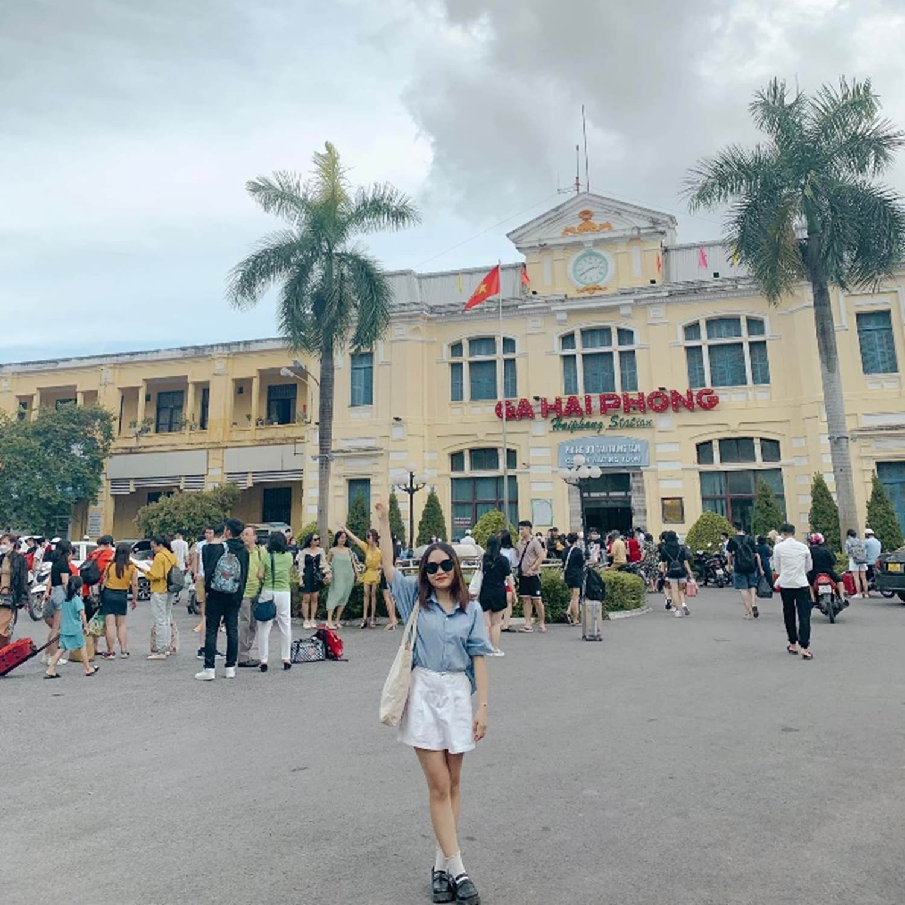
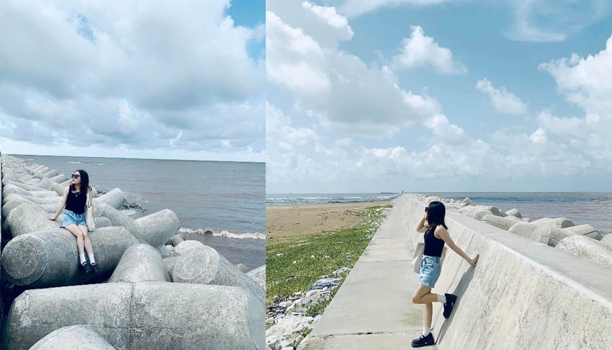
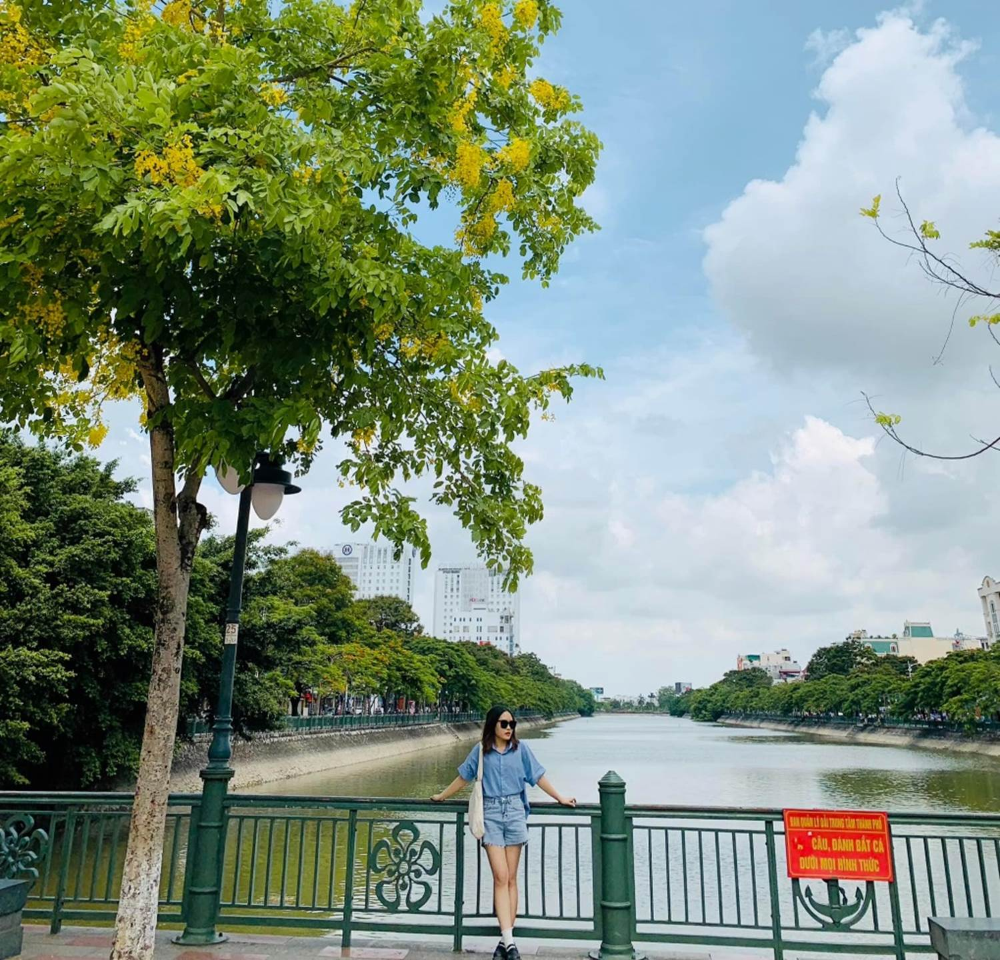

24h lòng vòng tại Hải Phòng

Chỉ có 24h để khám phá 7749
địa điểm ăn uống, du lịch tại
Đất Cảng, mọi người thử tham khảo
lịch trình chuyến đi của chúng mình nhé.
Di
chuyển: Bọn mình lựa chọn phương tiện
tàu hoả vì để trải nghiệm, và mình đam mê
chụp ảnh mà nghe các bạn nói là đi tàu để
chill nhiều cảnh đẹp. Nhưng nói thật là nên tàu
bọn mình buồn ngủ quá nên toàn ngủ, lúc xuống tàu
cũng nắng quá nên quyết định lúc về mới
chụp. Mình khởi hành từ Ga Hà Nội đến Ga
hải Phòng chỉ mất 2h45’, ngồi ghế mềm
điều hoà thời gian đi lâu hơn xe khách nhưng
không gian rộng rãi nên thoải mái hơn. Vé bọn mình
đặt qua Vnpay, khứ hồi 140k/người

Đi
lại tại HP thì chúng mình lựa chọn xe máy để
di chuyển thuận tiện hơn. Bọn mình thuê xe ngay
ngõ 112 Lương Khánh Thiện. Cô chú rất nhiệt tình,
chu đáo, nhà cô chú có rất nhiều loại xe và
được chọn lựa thoải mái, đi xe nhà cô
chú cực yên tâm vì phanh xe chắc chắn, đèn, xi nhan,
gương đầy đủ, chúng mình thuê xe ga chỉ
150k/24h, cô bảo ngày thường thì chỉ 120k thui ạ,
bọn mình đi khá nhiều nơi nên đổ thêm 130k
tiền xăng
Chỗ
ở: Bọn mình ở Thành Công Hotel ngõ 384 Lạch Tray. Chúng
mình ở phòng đơn 2 người, phòng rộng rãi,
sạch sẽ, giờ giấc thoải mái, cô chủ thân
thiện. Giá phòng chỉ 300k/đêm
Ăn
uống:
Ngày  :
:
+ Bọn mình đến HP tầm 1h
chiều, qua lấy xe rồi phi luôn ra hàng Bún cá cay ở 56
Lê Lợi để ăn nước dùng thanh, theo mình
thấy thì không cay lắm, chỉ hơi cay xíu thôi ạ,
các loại topping đều ngon, chả cá cũng ngon luôn
không có gì để chê, giá 30k/bát
+ Về phòng ngủ đến
gần 4h dậy rồi bọn mình đi Đồ Sơn,
từ nhà nghỉ của bọn mình ra đó tầm 24km
nhưng đường thẳng tắp dễ đi
lắm ạ. Ra bọn mình thuê chỗ thay đồ
5k/người, tủ gửi đồ 30k/tủ, ra
biển check in ti tỉ con ảnh mỏi chân quá nên bọn
mình thuê 50k/ghế ngồi, nước uống bọn mình
được 1 anh chị nào đó cho ạ (bọn mình
thấy nhiều nước tưởng anh chị bán, ra
hỏi mua thì anh chị bảo anh cho, mỗi đứa
cầm 1 chai uống đi )
)
+ 6h bọn mình từ Đồ
Sơn về, tắm rửa rồi đi ăn tối
+ Tối mình ăn miến trộn
và bánh đa nước ở 272 Hàng Kênh, cả mình và
bạn mình đều thấy không ngon, không quá tệ
nhưng nhạt nhẽo, không có gì đặc sắc
+ Ốc mình ăn ở ngay
đối diện quán miến trộn luôn ạ, ăn xong
sang đường ăn ốc luôn, ốc ngon,
tươi, sạch sẽ. Bọn mình ăn ốc mít xào
dừa, ốc hương trứng muối, ốc móng tay.
Cả 3 món đều ngon, bọn mình gọi thêm 3 cốc
nhân trần, tổng bill là 355k ạ. Chị nhân viên siêu thân
thiện, ngồi nói chuyện với bọn mình rồi
chỉ đường đi đến các chỗ cảnh
đẹp luôn ạ.
+ Ăn xong bọn mình ra cầu
Hoàng Văn Thụ check in, đẹp, đi lượn mát
lắm ạ, bọn mình dừng xe lại xheck in vài cái
ảnh xong đi luôn vì sợ cảnh sát bắt
+ Trên đường về bọn
mình ăn chè dừa dầm ở trên đường
Lạch Tray, ngay chỗ nhà thờ to to ạ, 25k/cốc
ăn ngon, ngọt thanh chứ không ngọt lợ vị
đường, thơm béo vị cốt dừa và sữa
tươi
Ngày  :
:

+ 6h30 dậy, đi đê chắn
song Cát Hải, từ nhả nghỉ của bọn mình
đi ra tầm 26km, đường thẳng dễ đi
mỗi tội gần cảng nên hơi nhiều container
ạ, cảnh siêu siêu đẹp luôn, bầu trời xanh
ngắt mà nhìn như cuối chân trời luôn á, trên
đường đi bọn mình ăn sáng ở quán bên
đường, nhưng k ngon
+ 9h30 từ Cát Hải về,
bọn mình bị lạc đường nên 10h30 mới
về tới nơi, bọn mình đi lạc lên
đường cao tốc, gặp cảnh sát mà các ảnh
chỉ chỉ đường chứ k bắt

+ Lúc về bọn mình có đi ra
hồ Tam Bạc để chụp hoa phượng
nhưng giờ hết phượng rồi ạ, chỉ
lác đác vài bông nên bọn mình chụp hoa gì vàng vàng
giống ở hồ Tây ý ạ
+ Trà sữa mình mua ở trà sữa
Đông Đô ngay hòi Tam Bạc, 49k/2 cốc 1 size M, 1 size L
siêu nhiều trân trâu ngon lắm ạ
+ Về ngủ đến 12h30
trả phòng
+ Bánh mì cay mình mua ở bánh mì cay
Khánh Nạp, quán đông, nhiều khi họ không nhận
đơn nữa nhưng vào mua ít họ vẫn bán ạ,
mình vào hỏi mua và tự nhặt, tự bọc giúp cô luôn,
25k/chục ăn siêu ngon, k bị tanh mùi pate chứ mình
ăn mấy quán tanh mình buồn nôn luôn ấy
+ Bọn mình ra quán cafe No1986 quán view
đẹp, siêu đông, nhưng đồ uống k hợp
khẩu vị mình lắm
Kết thúc chuyến foodtour 2
người, bọn mình tính sơ quan tầm
1tr/người ạ ,
các bạn đi theo nhóm đông người càng rẻ
hơn./.
,
các bạn đi theo nhóm đông người càng rẻ
hơn./.